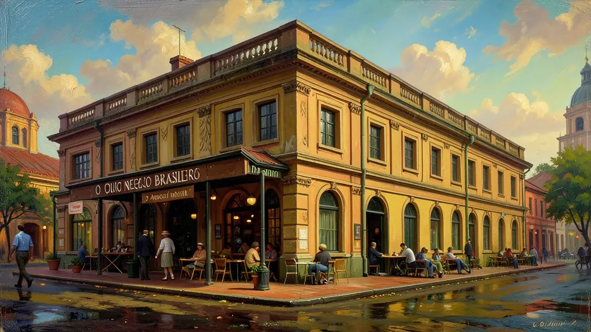
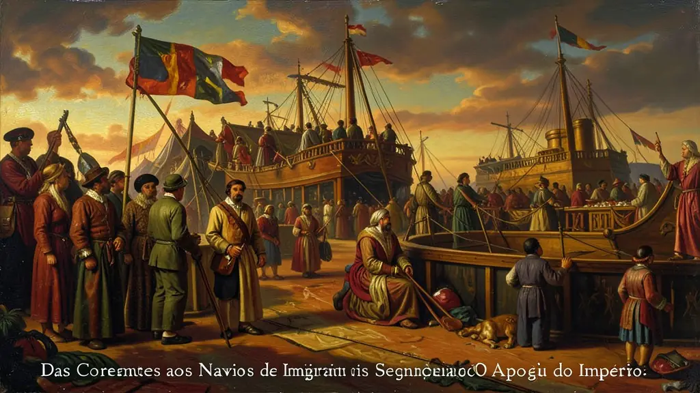
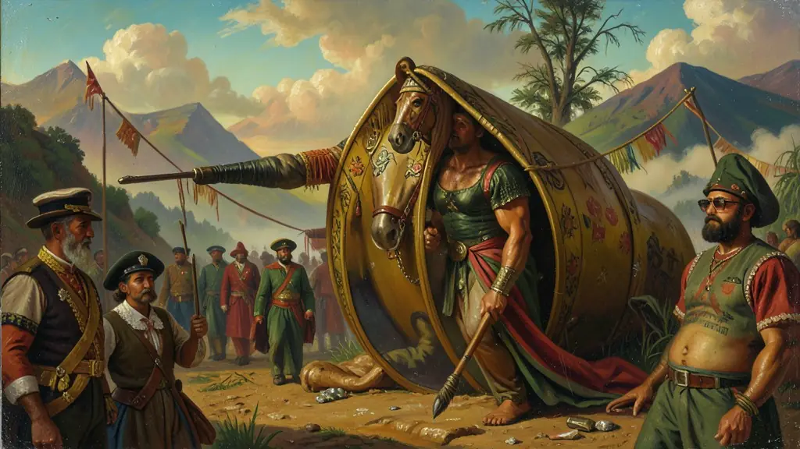

Capítulo 01
1. Café: O Ouro Negro Brasileiro
O café foi o salvador da lavoura nacional. No Vale do Paraíba, o cultivo era arcaico e destruía a terra. Já no Oeste Paulista (terra roxa), os fazendeiros eram modernos e dinâmicos, investindo em ferrovias e trazendo imigrantes italianos. O lucro do café criou os 'Barões do Café' e permitiu que o Brasil tivesse seus primeiros bondes, teatros monumentais no Rio e a iluminação a gás nas ruas capitais.

Capítulo 02
2. Das Correntes aos Navios de Imigrantes
A Inglaterra, 'policial dos mares', obrigou o Brasil a parar de comprar africanos. D. Pedro II e a elite agrária iniciaram então a substituição da mão de obra. Primeiro veio o sistema de parceria (que faliu por dívidas dos imigrantes), depois o colonato subsidiado pelo governo. Milhões de europeus (italianos, alemães e poloneses) chegaram para trabalhar no café, mudando a cultura e a demografia do Sul e Sudeste para sempre.

Capítulo 03
3. A Guerra do Paraguai: A Glória Amarga
O maior conflito da América do Sul destruiu o Paraguai e endividou o Brasil. Mas, para a política interna, o resultado foi a criação de um Exército orgulhoso e politizado. Os oficiais voltaram da guerra perguntando: 'Por que o Imperador manda tanto?'. O republicanismo nasceu dentro dos quartéis brasileiros pós-1870, tornando os militares os futuros carrascos do trono de Pedro II.

Capítulo 04
4. As Três Crises do Trono
Três pilares sustentavam a Monarquia: a Igreja, os Militares e os Fazendeiros. Na Crise Religiosa, o Papa brigou com o Imperador sobre a Maçonaria. Na Crise Militar, os generais queriam mais verba e voz na política. E na Crise Abolicionista, com a Lei Áurea, os fazendeiros retiraram o apoio à monarquia porque não foram indenizados pelos escravos libertos. Sem esses três pilares, o trono caiu por terra no dia 15 de novembro.
Capítulo 05
5. O Pós-Abolição e o Fim melancólico
A Princesa Isabel assinou a lei sob aplausos das massas negras, mas o Estado brasileiro não deu um palmo de terra ou um centavo de auxílio aos ex-escravizados. A República que nasceu no ano seguinte não melhorou em nada a vida do negro. Pelo contrário, D. Pedro II foi embora para o exílio em Paris, levando um punhado de terra brasileira no bolso, enquanto o país mergulhava na ditadura da espada de Deodoro.
O Segundo Reinado (1840-1889) sob D. Pedro II representou o período de maior estabilidade política da história imperial, sustentado pela expansão da cafeicultura no Vale do Paraíba e, posteriormente, no Oeste Paulista. O café tornou-se o 'ouro negro' que financiou a modernização de infraestrutura, como ferrovias e portos, e permitiu o surgimento de uma elite parlamentar sofisticada. D. Pedro II, através do parlamentarismo 'às avessas', exercia o Poder Moderador para equilibrar Liberais e Conservadores, mantendo a ordem monárquica de forma quase inabalável.
A Guerra do Paraguai (1864-1870) foi o grande divisor de águas do regime. Embora o Brasil tenha saído vitorioso como parte da Tríplice Aliança, o custo humano e financeiro foi avassalador. O Exército Brasileiro, que até então possuía pouco prestígio, retornou do conflito modernizado, politizado e abertamente crítico à manutenção da escravidão. A questão militar, aliada à questão religiosa e à desilusão da elite agrária com a abolição sem indenização, formou o tripé que derrubaria o trono em 1889.
A abolição definitiva em 1888 foi o golpe fatal na monarquia. Os chamados 'Republicanos de Última Hora' (fazendeiros escravistas revoltados com a Lei Áurea) uniram-se aos militares de inclinação positivista para proclamar a República. Para o Enem, o Segundo Reinado deve ser visto como um período de transição: do Brasil agrário-escravista para um país que ensaiava sua industrialização (Era Mauá) e sua integração definitiva ao sistema capitalista mundial, mas que não conseguiu reformar seu sistema político para evitar o golpe militar.
Fonte: CARVALHO, José Murilo de. A Construção da Ordem / Teatro de Sombras. Rio de Janeiro: Civilização Brasileira, 2003.
Atividades interativas
Questões para fixar
O sistema político do Segundo Reinado brasileiro funcionava sob o chamado 'Parlamentarismo às Avessas'. O que essa expressão significava na prática?
A Lei Áurea de 1888 foi a etapa final do processo de abolição da escravidão no Brasil. Qual foi a principal consequência política imediata dessa lei para a monarquia?
Qual foi o principal fator que contribuiu para a estabilidade política durante o Segundo Reinado?
Qual foi a lei que visou uma transição lenta para o fim da escravidão no Brasil?
Qual foi o evento que marcou o fim do Segundo Reinado e a Proclamação da República no Brasil?